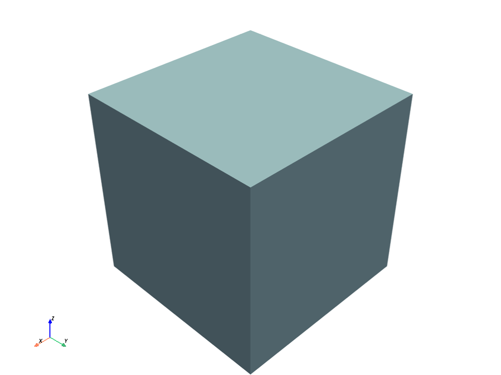

Note
Go to the end to download the full example code.
Use the MeshObjectPlot class#
The Visualization Interface Tool provides the MeshObject helper class to relate a custom object
with its mesh. With a custom object, you can take advantage of the full potential of the
Visualization Interface Tool.
This example shows how to use the MeshObjectPlot class to plot your custom objects.
Relate CustomObject class with a PyVista mesh#
import pyvista as pv
# Note that the ``CustomObject`` class must have a way to get the mesh
# and a name or ID.
class CustomObject:
def __init__(self):
self.name = "CustomObject"
self.mesh = pv.Cube()
def get_mesh(self):
return self.mesh
def name(self):
return self.name
# Create a custom object
custom_object = CustomObject()
Create a MeshObjectPlot instance#
from ansys.tools.visualization_interface import MeshObjectPlot
# Create an instance
mesh_object = MeshObjectPlot(custom_object, custom_object.get_mesh())
Plot the MeshObjectPlot instance#
from ansys.tools.visualization_interface import Plotter
pl = Plotter()
pl.plot(mesh_object)
pl.show()

Total running time of the script: (0 minutes 0.439 seconds)